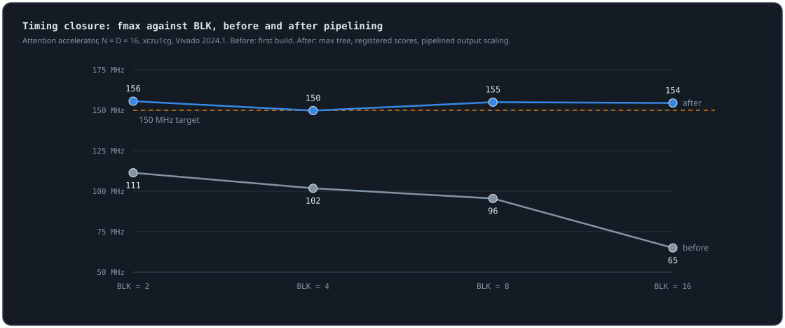
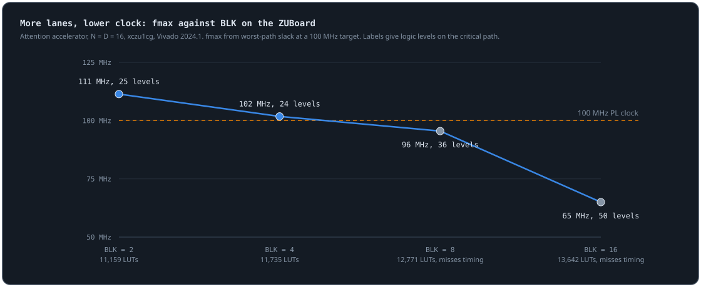
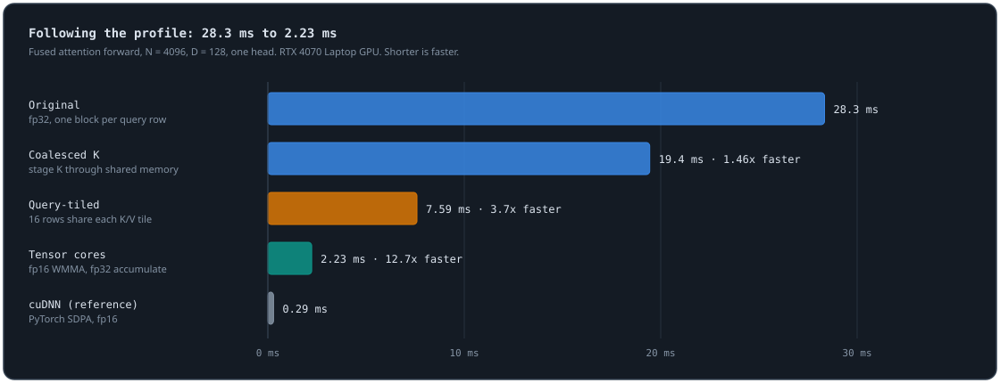
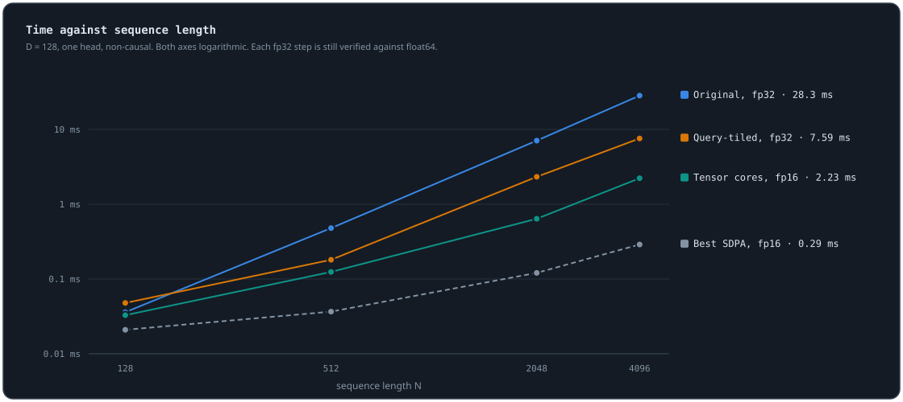
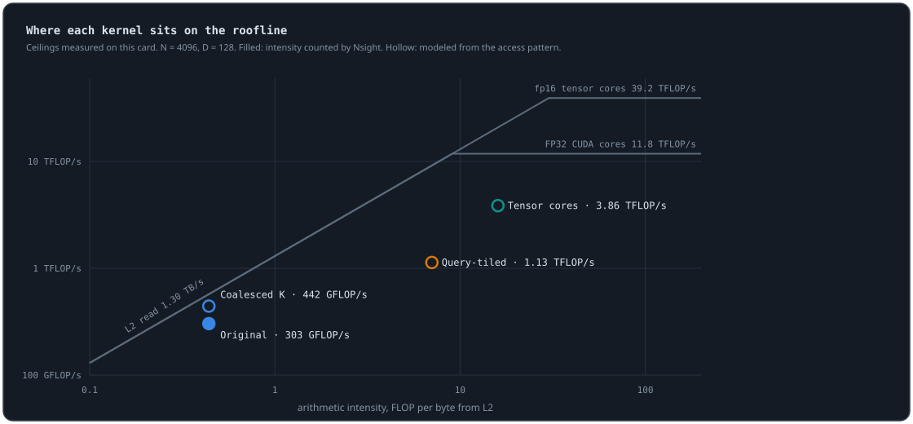
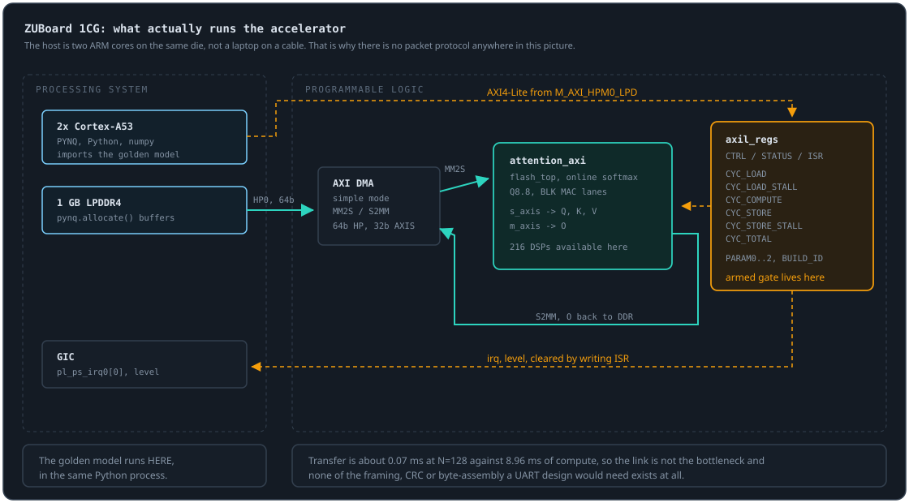
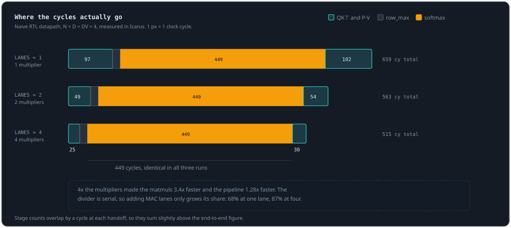
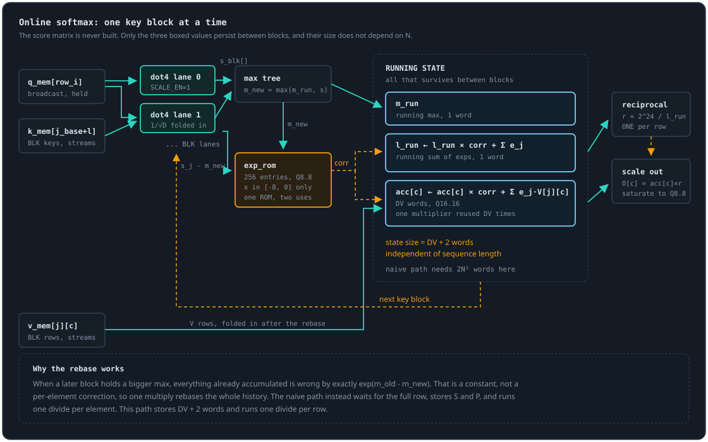

Dev Blog
Notes on building the Attention Accelerator. Each entry leads with the core idea, reasons through the implementation and its cost (compute-bound vs memory-bound), and ends with a takeaway. Newest first.
Following the timing report to 150 MHz, then spending the DSPs
Four changes, each aimed at whatever the timing report named, took every N=16 build from 65 to 111 MHz up to 150 MHz or more. Then the other half of the last post's lesson: lanes were not buying cycles because the fold was serial. Folding a whole output row per cycle cut compute from 7,328 cycles to 1,520. Every step stayed bit-exact against the same integer spec.

One path at a time
The last post ended with one critical path: from a lane's dot-product DSP, through the max across lanes, into the exponential lookup and the running sum, 50 logic levels at 16 lanes. The max was a loop, so it synthesized as a chain. I made it a tree and registered the result, and gave the rebase lookup, exp(m_old - m_new), a cycle of its own. That costs one cycle per block of keys and took 16 lanes from 65 to 129 MHz. It also made fmax flat across lane counts, which was the real problem.
With that path gone, the report named the next one: the final scale of each output, a 37 by 25-bit multiply by the row's reciprocal that spans two cascaded DSPs, then rounding and saturation, all in one cycle. I split it into three stages. The results land two cycles late, but by then the next row is already scoring, so it costs nothing. That brought 2, 4 and 8 lanes past 150 MHz. At 16 lanes the max tree was back on top, now because it read the DSP outputs directly, so it reads the registered scores instead, one more cycle per block.
One failure had nothing to do with the design. The first build of the output pipeline reported exactly the same slack as the build before it. Packaging had failed, and Vivado had quietly reused the old IP. Separately, builds were failing on Windows' 260-character path limit, because the checkout is deep and Vivado nests deeper. The scripts now take a short work directory. If two builds report identical numbers after a change, suspect the build before the change.
Making lanes pay
The fold step accumulates exp times V into the output row. It used one multiplier across all DV columns, so each key cost DV cycles no matter how many lanes computed its score. A new FOLD_PAR option gives it DV multipliers, one key per cycle, and does the same for the rebase. The products and the order of the sums are unchanged, so the output is the same bits, and the cycle model in the repo predicts the new counts to within 2%. It costs 45 more DSPs, which this part has plenty of.
Read the timing report one path at a time. Each fix moves the limit somewhere else, and the next report tells you where. It took four rounds, and cost two cycles per block of keys, to get 2.4x the clock at 16 lanes. The larger win was on the cycle side, and the cycle model had pointed at it all along.
Performance
| N=16, BLK, fold | LUT / DSP | fmax | compute |
|---|---|---|---|
| 4, serial (first build) | 11,735 / 10 | 102 MHz | 7,200 cy, 72.0 us |
| 4, serial | 11,662 / 10 | 150 MHz | 7,328 cy, 49.5 us |
| 16, serial | 13,216 / 22 | 155 MHz | 5,600 cy, 37.8 us |
| 4, parallel | 12,133 / 55 | 156 MHz | 2,528 cy, 17.1 us |
| 16, parallel | 13,607 / 67 | 151 MHz | 1,520 cy, 10.3 us |
Vivado 2024.1 on the XCZU1CG, whole design including the DMA. Compute time uses the real 148.1 MHz clock, and the first build uses its own 100 MHz clock. Loading Q, K and V adds at least 768 cycles at N=16, which is now a third of the fastest run, so packing two values per stream beat is next. Then running it on the board.
Every build script I had never run, and the path that sets the clock
The FPGA scripts had been written without Vivado to run them on. The first real run broke in four places before it made a bitstream, and that bitstream missed 150 MHz. After the fixes, five builds went through, and the sweep says something the simulator never could: adding lanes makes the clock slower, because one combinational path grows with every lane.
What broke on the first run
The target is the ZUBoard 1CG, an XCZU1CG with 37,440 LUTs, 216 DSPs and a quad-core A53 running PYNQ. The block design is the usual shape: an AXI DMA streams Q, K and V out of DDR through the accelerator and back, and the A53 drives the control registers over AXI-Lite. Four things were wrong, and none of them were in the RTL.
The Zynq preset names are indexed, not named after the ports they make. PSU__USE__M_AXI_GP0 turns on M_AXI_HPM0_FPD, and the low-power master I wanted is GP2. The DMA-to-DDR automation found no valid slave when pointed at the DMA master and worked when pointed at the PS slave, which is how Vivado's own generated scripts do it. report_bd_address is not a command. And the sweep script passed -nojournal -nolog after -tclargs, where Vivado hands them to the script as build parameters.
The driver had four more, found by reading it against the block design. It looked up IP names that did not exist. It used int16 buffers for a stream that carries one element per 32-bit beat, which would have moved half the data and hung. And it named the interrupt wrong. It also needed the .hwh file next to the bitstream, which the build was not copying.
The sweep

BLK is the number of dot-product lanes. The simulator swept it for cycles and found the expected trade. Vivado adds the missing axis. At N=16, going from 2 to 16 lanes costs only 2,500 LUTs and 14 DSPs, which is nothing on this part. Clock is what it costs: fmax falls from 111 MHz to 65 MHz, and BLK 8 and 16 miss the 100 MHz target.
Every build has the same critical path. It starts at a lane's DSP output, goes through the max across all lanes, subtracts, looks up the exponential, and ends in the running sum. The max is written as a loop, so it synthesizes as a chain of BLK comparisons, and the exponential table is asynchronous, so it adds levels instead of a register. That is 25 logic levels at BLK 2 and 50 at BLK 16. About 55% of each path is routing.
What it means for the design
The sweep also shows a cycle problem I had not noticed. The fold step, which accumulates exp times V, does one multiply per cycle, so it costs N times DV cycles per row whatever BLK is. Extra lanes only speed up the dot products. So right now more lanes cost clock and buy few cycles. Two changes fix both: a tree for the max with a register after it, and a fold that does DV multiplies at once. I keep a running log of every timing path and every idea, with its status, in the repo.
A cycle count is only half a latency. The other half is the clock, and it comes from the longest combinational path, which a cycle-accurate simulator cannot see. The design I thought scaled with lanes has a path that grows with lanes too.
Performance
| N, BLK | LUT / FF / DSP | slack at 100 MHz | fmax |
|---|---|---|---|
| 4, 2 | 5,323 / 7,812 / 8 | +1.97 ns | 124 MHz |
| 16, 2 | 11,159 / 24,505 / 8 | +1.03 ns | 111 MHz |
| 16, 4 | 11,735 / 25,621 / 10 | +0.18 ns | 102 MHz |
| 16, 8 | 12,771 / 27,830 / 14 | -0.47 ns | 96 MHz |
| 16, 16 | 13,642 / 32,144 / 22 | -5.38 ns | 65 MHz |
Vivado 2024.1, whole design including the DMA and interconnect, D = DV = N. On-board latency and the hardware-versus-model diff come next, once the board is running PYNQ.
Tensor cores, and the chart that caught my own mistake
Moving both matmuls onto tensor cores took the fused kernel from 7.59 ms to 2.23 ms at N=4096, 12.7x faster than where it started. Then I drew the roofline, and one of my points sat above its own roof. That is physically impossible, so the roof was wrong, and so was a number I had already published.

The tensor-core kernel
The inputs become fp16 and both products, Q times K transposed and P times V, run through WMMA: 16 by 16 by 16 tiles, fp16 in, fp32 accumulate. Each warp owns 16 query rows and shares nothing with any other warp, so the kernel has no __syncthreads() at all. After the last two posts I count that as a feature. The softmax stays in fp32, and P is rounded to fp16 just before the second product, which is what FlashAttention does.
One detail cost more thought than the rest. The online softmax has to rescale every row of the output accumulator by its own correction factor each tile, and WMMA deliberately hides which register holds which row. So the accumulator lives in shared memory: load it into a fragment, multiply into it, store it back, and rescale rows in between with ordinary threads. It works and it is correct. It is also the main thing still slowing this kernel down.
K stored row-major is already K transposed in column-major, so the kernel never materializes a transpose. It passes against a float64 reference built from the same fp16 inputs, with errors between 5e-5 and 4e-4, which is fp16's rounding floor, and all three sanitizers are clean.

Against PyTorch at the same single-head fp16 shape it reaches 13 to 30% of the best SDPA backend. At N=4096, D=128 cuDNN takes 0.29 ms. The gap is still large, and I know where it goes.
The point above the roof

My first version of this chart used 847 GB/s for L2, from a device-to-device copy. The coalesced kernel plotted above that line. Either the kernel was breaking physics or the ceiling was wrong. A copy spends half its bandwidth writing, and attention only reads, so I wrote a read-only microbenchmark that streams a buffer small enough to stay in L2. It measured 1.30 TB/s. Nsight had been saying the same thing all along: it reported L2 at 42% while the kernel moved 550 GB/s, and 550 over 1300 is 42%.
That means the previous post was wrong about one number. The original kernel reached 53% of its L2 roof, not 72%. I corrected it there and in the README rather than quietly swapping the value.
The chart also shows what is left. The tensor-core kernel sits at 3.86 TFLOP/s, 10% of the tensor-core ceiling, and well under the L2 slope at its intensity. Two costs remain. Each warp still reads K and V from L2 on its own, because nothing is shared through shared memory yet. And the accumulator makes that round trip through shared memory every tile. The fixes are staging K and V with asynchronous copies, and moving to mma.sync, whose register layout is documented, so the output can stay in registers.
Plotting the data is a test, not decoration. A table of numbers happily held a ceiling that was a third too low. The picture made it impossible to miss, because a point cannot sit above its own roof.
Performance
| Metric | How it is measured | Value |
|---|---|---|
| Latency, N=4096 D=128 | cudaEvent, mean of 20 launches | 2.23 ms (12.7x vs original) |
| Throughput, same shape | attention FLOPs / time | 3.86 TFLOP/s |
| Share of tensor-core peak | vs a measured 39.2 TFLOP/s fp16 GEMM | 10% |
| Percent of best SDPA, fp16 | same single-head shape | 13 to 30% |
| Error vs float64 | same fp16 inputs, N up to 512 | 5e-5 to 4e-4 |
| L2 read ceiling | read-only ld.cg stream | 1.30 TB/s (was 847, from a copy) |
The model got the traffic right and the bottleneck wrong
My roofline model said the CUDA kernel was starved by L2 bandwidth. Nsight Compute agreed about the traffic almost to the byte and disagreed about the limit: L1 was saturated first, by loads that used 7 of every 32 bytes they fetched. Fixing the thing the profiler named, then the thing the model named, made the kernel 3.7x faster.
What the counters said
At N=4096 the model predicted 17.2 GB moving from L2 to L1 at D=128 and 8.59 GB at D=64. Nsight counted 19.4 GB and 8.58 GB. That part of the model was right. DRAM saw 85 MB, well under 1% of its bandwidth, which was also right. The part it missed:
L1/TEX throughput 98% <- the actual limit
L2 throughput 42%
useful bytes per sector 7.1 of 32
warps active 97%
top stalls long scoreboard 57, MIO throttle 57 cyclesOccupancy was fine and the arithmetic units were idle. Every warp was waiting on memory, and the memory it was waiting on was mostly waste. Thread tid computed its dot product by walking its own key row, K[j*D + k], so the 32 lanes of a warp sat D floats apart. Every load touched 32 different sectors and used 4 bytes from each. My model assumed each byte fetched from L2 was a byte used. The hardware did not care what I assumed.
Fix the limit the profiler named
K now comes through shared memory 32 feature columns at a time, loaded so consecutive threads read consecutive floats of one row, and stored transposed with a pitch of BC+1 so neither the store nor the read has bank conflicts. The accumulation order over k did not change, so every checked case reports exactly the same error as before. N=4096, D=128 went from 28.3 ms to 19.4 ms, 1.46x. Less than I hoped, and the reason is the next limit: with L1 cleared, re-streaming K and V from L2 once per query row is what is left.
Then the limit the model named
The second change is the real FlashAttention move. One warp owns one query row, and a block of WR warps shares every K and V tile through shared memory, so each byte from L2 now serves WR queries instead of one. A useful side effect: every reduction is now a warp shuffle inside one warp, so there is no block-wide scratch at all, and the race from the last post cannot happen in this design.
I swept WR instead of guessing it. Four rows per block took 25.8 ms, eight took 10.4, sixteen took 7.6, and thirty-two does not fit in the default 48 KB of shared memory. All 24 sweep cases pass against float64, and compute-sanitizer racecheck, memcheck and synccheck are clean.
| N, D | original | coalesced | query-tiled | speedup |
|---|---|---|---|---|
| 512, 128 | 0.479 ms | 0.340 | 0.181 | 2.7x |
| 2048, 128 | 7.08 | 5.15 | 2.33 | 3.0x |
| 4096, 64 | 14.5 | 11.1 | 4.71 | 3.1x |
| 4096, 128 | 28.3 | 19.4 | 7.59 | 3.7x |
| 4096, 128, causal | 14.3 | 10.2 | 3.95 | 3.6x |
At N=128 the new kernel is slower, because eight blocks cannot fill 36 SMs. Small problems want small blocks, and I left that alone rather than add a dispatch heuristic I have not measured.
A model tells you what should limit a kernel. A profiler tells you what does. Mine was right about the bytes and wrong about which unit ran out first, and the only way to know was to count. The kernel now does 1.13 TFLOP/s, up from 0.30, and the next step is tensor cores, which the next entry covers.
Performance
| Metric | How it is measured | Value |
|---|---|---|
| L2 to L1 traffic, N=4096 D=128 | Nsight Compute vs the model | 19.4 GB vs 17.2 GB |
| Binding unit before the fix | Nsight speed of light | L1/TEX at 98% |
| Latency, N=4096 D=128 | cudaEvent, mean of 20 launches | 28.3 ms to 7.59 ms (3.7x) |
| Throughput, same shape | attention FLOPs / time | 303 GFLOP/s to 1.13 TFLOP/s |
| Percent of SDPA, fp32 | same shape and dtype | 6.0% to 22% |
| Correctness | 24-case sweep vs float64, three sanitizers | 24/24, 0 hazards |
The emulator said pass. The GPU said 0.28.
The fused CUDA kernel passed every emulated test. Its first run on a real GPU failed about half the N=512 cases, with errors up to 0.28 that changed from run to run. It was a race, it lived exactly on the emulation boundary, and the harness could never have found it. Then the baseline turned out not to be the kernel I thought it was either.
Nondeterministic error is a fingerprint
The hardware is an RTX 4070 Laptop GPU (Ada, sm_89, 36 SMs) on native Windows with CUDA 13.4. Toy dimensions matched the golden file. Then the sweep printed this:
N=512 D=32 causal=0 max_err=1.998e-02
N=512 D=64 causal=0 max_err=8.187e-02
N=512 D=128 causal=0 max_err=2.843e-07 <- fine this time
N=512 D=128 causal=1 max_err=2.777e-01Re-running the same case gave a different answer each time. A math bug is deterministic. An indexing bug is deterministic. When the same input produces a correct answer on one run and a wrong one on the next, the answer depends on scheduling, and that means a race.
Where it was
Every tile runs two block-wide reductions back to back: the max, for the new running max, then the sum of exponentials. Each works in two steps. Every warp reduces its 32 values with shuffles and writes a partial into scratch[warp], then a barrier. Thread 0 folds the partials and writes the answer into scratch[0], then a barrier, then every thread reads scratch[0].
if (threadIdx.x == 0) scratch[0] = v;
__syncthreads();
return scratch[0]; // read the max ...
// ... and the very next call starts with
if (lane == 0) scratch[warp] = v; // warp 0 writes scratch[0]Nothing sits between reading the max and starting the sum. Warps are not in lockstep, so a fast warp 0 reads the max, runs straight into the sum, and writes its partial sum into scratch[warp], which for warp 0 is scratch[0]. A slower warp that has not read the max yet now reads a partial sum and uses it as the max. Its correction factor exp(m_run - m_new) is computed against garbage, and its output columns come out wrong.
The fix is one more slot. The answer goes through scratch[32], which the partials never touch. It is only written between a reduction's two barriers and only read after the second, and it cannot be written again until every thread has passed the next reduction's first barrier, which every thread reaches only after its read. So it is safe without the extra barrier that the obvious fix would have added to every tile. compute-sanitizer --tool racecheck reports 21 hazards before and 0 after, and 90 repeats of the failing cases now pass.
Why the harness missed it
In the last post I wrote that the CPU harness proves nothing about real races. That turned out to be the exact caveat that bit. The emulation boundary was the two reduction functions, and the emulated versions happened to read the answer and then wait at one more barrier. The GPU versions did not. On top of that the emulator runs threads one at a time, so no warp can ever overtake another. The bug lived in precisely the code the harness replaced.
I would still build the harness again. It found every indexing and tail-tile bug before the GPU saw the code. It just cannot find the class of bug that only exists when things run at the same time, and the only tool that does is the one built for it.
The baseline was not the kernel I thought
I had written that SDPA, PyTorch's built-in attention, dispatches to FlashAttention-2 and cuDNN. On the Windows build of PyTorch neither is compiled in, and SDPA quietly falls back to the memory-efficient kernel. The only hint is a one-line warning. My Triton kernel was reading 100 to 123% of SDPA, which looked like a result until I forced each backend in turn and found two of them missing. PyTorch 2.14 brings cuDNN attention back, so the table below reports both. FlashAttention-2 is still absent from every official Windows build.
Two smaller bugs came out of the same run. The Triton fp32 check was failing at 2e-3, because tl.dot on fp32 inputs defaults to TF32 and keeps about 10 mantissa bits; asking for IEEE brings it to 1e-6. And fp32 at D=128 needed 113 KB of shared memory against the 99 KB an Ada block gets, which a card with more shared memory would have hidden.
The numbers
Triton, fp16, 16 heads, do_bench median. Percent is Triton's speed relative to each backend, so above 100% is faster.
| N, D | Triton ms | % of cuDNN | % of mem-efficient |
|---|---|---|---|
| 512, 128 | 0.117 | 76% | 98% |
| 2048, 64 | 0.516 | 102% | 119% |
| 2048, 128 | 1.34 | 76% | 107% |
| 4096, 64 | 2.15 | 96% | 126% |
| 4096, 128 | 5.40 | 74% | 110% |
| 4096, 128, causal | 2.85 | 75% | 108% |
Against cuDNN, Triton is at parity for D=64 and about three quarters of the speed at D=128. One correction to the last post: I wrote that this kernel uses no tensor cores. That is true of the CUDA kernel, not the Triton one, because tl.dot on fp16 tiles lowers to MMA instructions. That is most of the gap between the two implementations.
The CUDA kernel is fp32, one head, one thread block per query row. It reaches 36% of SDPA at N=512 and falls to 6 to 8% at N=4096, flat at about 300 GFLOP/s.
Where the CUDA kernel sits on the roofline
I measured the ceilings on this card rather than trusting a spec sheet: 11.8 TFLOP/s for FP32, 39.2 TFLOP/s on the fp16 tensor cores, 237 GB/s from DRAM and 1.30 TB/s read from the 32 MB L2, with the clock holding at 2.4 GHz. Correction: this post first said 847 GB/s for L2. That came from a copy benchmark, which splits bandwidth between reads and writes, and attention only reads. A read-only stream measures 1.30 TB/s, and Nsight agrees.
Each of the N thread blocks streams all of K and V, so at N=4096 and D=128 the kernel moves 17.2 GB to do 8.6 GFLOP. That is 0.5 FLOP per byte. K and V together are only 4 MB, so they live in L2, and DRAM barely notices. Against L2 the roof at that intensity is about 570 GFLOP/s, and the kernel does 303, which is 53% of it. The kernel is not slow at arithmetic. It uses 2.6% of the FP32 ceiling because it spends its time re-reading the same K and V once per query row.
That makes the next step unambiguous. A block that owns a tile of B query rows reads K and V once for all of them, which multiplies the intensity by B. At B=64 the kernel crosses the L2 ridge and tensor cores start to matter. That is the actual FlashAttention design, arrived at by measurement instead of by copying it. For comparison, the Triton kernel already does this and reaches 65% of the tensor-core ceiling, against 88% for cuDNN.
One caveat. That L2 traffic is modeled, not counted. Update: Nsight Compute later counted 19.4 GB, close to the model, but showed L1 was the real limit. See the next entry.
Every one of these was invisible until the code ran on the real thing: a race the emulator structurally could not see, a tolerance measuring the wrong precision, a tile that fit one GPU and not another, and a baseline that silently swapped itself out. Check which kernel your baseline actually runs, and when an error changes between identical runs, stop reading the math and start looking for two threads touching one address.
Performance
| Metric | How it is measured | Value |
|---|---|---|
| CUDA correctness, 24-case sweep | N≤512 vs float64 on the GPU | 24/24, worst 1.4e-06 |
| Races, before / after fix | compute-sanitizer --tool racecheck | 21 / 0 hazards |
| CUDA latency, N=4096 D=128 | cudaEvent, mean of 20 launches | 28.3 ms (14.3 ms causal) |
| CUDA, percent of SDPA | same shape, fp32 | 36% at N=512, 6.0% at N=4096 |
| Triton, percent of cuDNN | do_bench median, fp16 | 74 to 131% |
| CUDA arithmetic intensity | bytes modeled from the access pattern | 0.5 FLOP/byte (L2 bound) |
| CUDA share of L2 roof | 303 GFLOP/s vs 572 at 0.44 FLOP/byte | 53% (corrected from 72%) |
| Triton / cuDNN share of tensor-core peak | vs a measured 39.2 TFLOP/s fp16 GEMM | 65% / 88% |
| L2 traffic, occupancy, stall reasons | Nsight Compute | 19.4 GB, 97% warps active, L1-bound (next entry) |
The counters were lying, and the testbench only caught it because it did not trust them
I built cycle counters into the accelerator so the host could measure it properly. The first integration test compared what the hardware reported against what the testbench independently observed, and they disagreed by four cycles. Four is small enough to shrug at and exactly the kind of number you must not shrug at, because it meant every measurement the design would ever produce was quietly short.
The board changed the design
The target is an Avnet ZUBoard 1CG, which is a Zynq UltraScale+ part: dual Cortex-A53, 1 GB of LPDDR4, 216 DSP slices and 3.8 Mb of block RAM, with an official PYNQ image. I had planned a UART link with a packet framer and a CRC. On this board that is the wrong design, and I worked that out by computing the link budget before writing any of it.
Over AXI-DMA an N=128 problem moves in about 0.07 ms against 8.96 ms of compute. Over a 115200 baud UART the same transfer takes 5.7 seconds, which is 635 times the compute, so every end-to-end timing would have been a measurement of an FTDI chip. The framing, the CRC, the byte assembler and the flow-control question all exist to survive a link that is hundreds of times too slow. None of it survived contact with the actual hardware.

The nicest consequence is that the host is Python on the A53, so it can import the bit-exact integer model directly and diff the hardware output in the same process. The golden model becomes the on-board self test. There is no protocol to get wrong because there is no protocol.
Error one: an interface that could not exist
My accelerator took all of Q, K and V in a single beat on flat buses. At the toy size that is 256 bits and perfectly reasonable. I had never asked what it becomes at a real size.
N=4 D=4 Q_flat = 256 bits
N=16 D=16 Q_flat = 4,096 bits
N=64 D=64 Q_flat = 65,536 bits
N=128 D=64 Q_flat = 131,072 bitsThere is no 131,072 bit port. The interface was not slow or inelegant, it was impossible, and it had been sitting in verified, bit-exact, fully tested RTL the whole time because nothing in simulation cares how wide a bus is. Toy dimensions had hidden a structural problem behind a working design, which is the same failure mode as the loop that read j < D instead of j < N and passed because N and D were both 4.
Replacing it with AXI4-Stream, one Q8.8 word per beat, took an afternoon. The proof that the arithmetic survived is that the compute phase is still 280 cycles at N=4 and 7200 at N=16, identical to before, and still bit-exact against the spec.
Error two: the counters started after the data did
Six counters, not one, because "how fast is the accelerator" is not a single number on a system like this. Load, compute and store are timed separately, and load and store each also count the cycles lost waiting on a stalled stream. That last split is the one that earns its keep: if the load phase is long and almost all of it is stalled, the DMA is starving the datapath and adding MAC lanes will do nothing, whereas if the stall count is near zero the transfer really is transfer. Those two situations look identical if you only measure elapsed time and they have opposite fixes.
Then the integration test disagreed with itself:
CYC_LOAD matches observed got=70 exp=74 FAIL
CYC_LOAD_STALL matches observed got=25 exp=26 FAIL
CYC_TOTAL brackets busy 372 < 376 busy FAILAXI DMA starts moving as soon as its descriptor is submitted. Nothing makes it wait for my control register. So the stream arrived, the accelerator began loading, and then the host wrote START, which zeroed the counters underneath a run that was already several cycles old. The arithmetic was perfect. The answer was bit-exact. Only the measurement was wrong, and only by the amount the host happened to be late, which means it would have varied run to run and looked like noise rather than a bug.
The fix is four lines: hold tready low until the host has armed the block, so data waits at the door until something is ready to measure it.
always_ff @(posedge aclk) begin
if (!aresetn) armed <= 1'b0;
else if (soft_reset) armed <= 1'b0;
else if (start) armed <= 1'b1;
else if (done_pulse) armed <= 1'b0;
end
assign s_axis_tready = core_s_ready & armed;That turns a required ordering into a hardware guarantee rather than a convention documented in a driver that someone will eventually not read. I had in fact written the driver to arm first, so on my own code path the bug would never have fired. It would have waited for the first person to submit the DMA descriptor early.
Why the test found it and a normal test would not
A conventional integration test checks that the output is correct and that the interrupt fires. This one passed both of those. It failed on an assertion I nearly did not write: that the numbers the hardware reports must equal the numbers the testbench watched it produce, counted independently from the internal phase signals. Measurement instrumentation is code, it can be wrong, and the failure mode is not a crash, it is plausible numbers that are slightly false forever.
I also made the total a separately counted value rather than the sum of the phases, so a gap between them is itself a signal. On the board that gap turns out to be useful rather than alarming: it is the time between the host writing START and the DMA delivering the first beat, which is exactly the DMA setup latency, and nothing else would have told me what it was.
Both errors had been invisible for the same reason: nothing in simulation cares how wide a bus is, and nothing in a correctness test cares whether the clock is honest. Asking what the design becomes at a real size found the first, and refusing to trust my own instrumentation found the second. Neither showed up as a wrong answer, which is exactly why they were still there.
Performance
Simulated cycle counts and the device budget for the target part. Real utilization and fmax need a Vivado run, which is next.
| Metric | How it is measured | Value |
|---|---|---|
| Reported vs observed cycles | integration testbench, independent count | exact on all five counters |
| Compute phase, N=4 / N=16 | counter, unchanged by the interface rewrite | 280 / 7,200 cy |
| Transfer vs compute, N=128 | link budget against measured cycles | 0.07 ms vs 8.96 ms |
| Block RAM ceiling, D=DV=64 | 3.8 Mb on XCZU1CG | naive N=294, streaming N=972 |
| DSP cost at BLK=16 | one DSP48E2 per 16x16 multiply | ~19 of 216 (8.8%) |
| fmax, LUT / FF / DSP / BRAM | Vivado timing and utilization | pending synthesis |
Testing a CUDA kernel on a laptop with no CUDA
I write CUDA on an M1 Mac and run it on a separate machine, which means every bug costs a round trip and I find out about it hours later. So I built a harness that runs the unmodified kernel body on the CPU: one thread per CUDA thread, blocks executed one at a time, and __syncthreads() backed by a real barrier. It catches the entire class of bug I actually make, which is indexing, not occupancy.
The same recurrence, a third time
The fused kernel is the online softmax from the last post, mapped onto a GPU instead of a register file. One thread block owns one query row, the running max, running sum and accumulator live in registers for the whole kernel, and K and V stream in from global memory in tiles. The score row is never written anywhere, which is the whole point: at a sequence length of 4096 that row alone would be 16 KB per query.
What changes between the FPGA and the GPU is not the algorithm, it is who owns the state and how the reduction happens. In RTL a comparator chain finds the block max and one FSM sequences everything. Here, 128 threads have to agree on the block max and the block sum every tile, which is two block-wide reductions per tile that the hardware version simply does not pay. Both reducers broadcast their result back to every thread rather than leaving it in thread zero, because every thread owns accumulators that need the same correction factor.
Causal masking was the one place I could do better than the obvious thing. The usual approach computes the full tile and masks the upper triangle. Since query i can only attend to keys up to i, the loop can just stop at i+1 instead, so the work is never done rather than done and discarded. At long sequence lengths that is close to half the FLOPs.
What the CPU harness does and does not prove
The emulation boundary is exactly two functions, the block max and the block sum, which use warp shuffles on the GPU and a shared array on the CPU. Everything else is the same source file nvcc compiles. That boundary is deliberate: a harness that rewrites the kernel proves something about the harness, not the kernel.
N=4 D=4 causal=0 max_err=1.484e-07 PASS
N=4 D=4 causal=1 max_err=1.421e-07 PASS
N=64 D=32 causal=1 max_err=4.052e-07 PASS
N=128 D=64 causal=0 max_err=3.958e-07 PASS
N=300 D=64 causal=0 max_err=2.766e-07 PASS <- tail tile, 300 % 128 != 0
N=300 D=64 causal=1 max_err=6.577e-07 PASS <- tail tile AND causal
N=512 D=128 causal=0 max_err=3.102e-07 PASSN of 300 is deliberately not a multiple of the tile width. The masked tail tile is where boundary bugs live, and a sweep over clean powers of two never visits it. Running causal and a ragged tail together is the case where two separate pieces of masking logic have to agree, which is the one I trust least.
This proves loop bounds, tile arithmetic, the online recurrence and barrier placement. A missing __syncthreads() deadlocks here, loudly, instead of producing plausible garbage on hardware. It proves nothing at all about coalescing, occupancy, real races or speed, and I would rather say that than imply the kernel is finished.
A Triton version, and what I will not claim
I wrote the same thing in Triton as well, shaped as a drop-in for F.scaled_dot_product_attention with the same tensor layout so a benchmark cannot accidentally time a transpose. Triton hands back the work CUDA makes you do by hand: loading a two dimensional block is one statement and the compiler picks the layout and the barriers. What it does not hand back is the algorithm. Write the two pass softmax in Triton and it is just as memory bound as the naive kernel was.
When I benchmark this, the comparison is against SDPA, which dispatches to the real FlashAttention-2 and cuDNN kernels. I am not going to claim to beat those. This kernel uses no tensor cores at all, so the honest number to report is percent of SDPA, and I will report whatever it turns out to be.
If your build target is on another machine, the distance between writing a bug and seeing it is the thing worth engineering away. Emulating just enough of the execution model to run the real kernel body cost an afternoon and now catches indexing and tail-tile bugs in seconds, locally, in CI, before the GPU ever sees the code.
Performance
Correctness is verified. Update, 2026-09-25: measured on an RTX 4070 Laptop GPU. The first real run also found a race this harness could not see; see the newest entry.
| Metric | How it is measured | Value |
|---|---|---|
| Correctness, N up to 512 | CPU emulation vs a float64 reference | 7/7 cases, max 6.6e-07 |
| Score row storage per query | declared state in the kernel | 0 (never materialized) |
| Kernel latency (ms) | cudaEvent timers around the launch | 28.3 at N=4096, D=128 |
| Percent of PyTorch SDPA | Triton do_bench median, fp16, vs cuDNN | 74 to 131% |
| Occupancy, DRAM throughput | Nsight Compute, N=4096 | 97% warps active, DRAM under 1% |
Softmax was the bottleneck, so I made it stream
I parameterized the MAC count in my attention datapath and swept it, expecting the usual area-for-speed trade. Four times the multipliers bought 1.28x. The profile said everything: the serial divider inside softmax costs the same 449 cycles no matter how wide the matmuls get, so adding MAC lanes only grows its share of the runtime. The fix was not more hardware, it was a different algorithm.
The measurement that changed the plan
The naive design is four stages chained by valid/ready: QK⊤, row max, softmax, then P·V. Only the two matmul stages care about LANES, the parameter that says how many dot4 units run in parallel. I instrumented the testbench to count cycles per stage by probing each module's FSM state, which costs nothing in the design itself, and swept the parameter.

The matmuls did get 3.4x faster. The pipeline went from 659 cycles to 515. Everything I gained on the matmul side was swallowed by a stage I had not touched, and the more I optimized, the worse the imbalance got: softmax was 68% of the runtime at one lane and 87% at four. This is Amdahl's law, except I could point at the exact register that caused it. The softmax stage runs one restoring divider per probability, N² divides for an N by N score matrix, one quotient bit per cycle.
What online softmax actually does
Softmax looks like it has to be global. You cannot normalize until you have seen every score in the row, and you cannot exponentiate safely until you know the row max. That is why the naive design materializes the whole N by N score matrix and then the whole probability matrix before P·V can start.
Online softmax gets around this by carrying a running max and fixing up its own history. Stream the keys in blocks, and for each block:
m_new = max(m_run, max_j s_j)
corr = exp(m_run - m_new) // <= 1.0, the rebase factor
l_run = l_run * corr + Σ_j exp(s_j - m_new)
acc_c = acc_c * corr + Σ_j exp(s_j - m_new) * V[j][c]
O_c = acc_c / l_run // once, at the very endThe line that matters is corr. When a later block turns out to contain a bigger score, everything already accumulated under the old max is wrong by exactly exp(m_old - m_new). That is a single constant, not a per-element correction, so one multiply rebases the entire history no matter how much of it there is. That is the whole reason softmax can stream.

Two things fall out of this for free. The N by N buffers disappear, because the only state that survives between blocks is a running max, a running sum, and DV accumulators. And the divides collapse from one per probability to one reciprocal per row, which I then multiply through. At N of 4 that is four divides instead of sixteen. At N of 128 it is 128 instead of 16384.
The storage argument is the one that decides whether a design fits on a part. At N of 128 with a head dim of 64, the naive path wants roughly 64 KB of BRAM just to hold S and P. The streaming path needs 66 words, and that number does not grow with sequence length at all.
The part I got wrong
My first run showed the streaming version was also twice as accurate as the naive one, 0.0065 max error against 0.0133. I was about to write that down as a free win. It is not true. Running both across 200 random seeds instead of the one I had been using, the gap mostly vanishes: mean error 0.00369 against 0.00407 with a block size of 4, and a dead heat at a block size of 1.
Worse, the direction is interesting. Smaller blocks are less accurate, not more. The rebase multiply rounds, and it happens once per block, so its error compounds N/BLK times down a row. It is the only place in the design where an error feeds back into itself. Streaming harder means streaming slightly less accurately, and flash is a memory and divide win rather than an accuracy win.
This was the second time in this project that a decision came out backwards when I judged it on one seed. The first was a rounding mode. Sixteen output values is not a distribution, and toy dimensions make that trap much easier to fall into.
Profile before you parallelize. Four times the multipliers bought 1.28x because I was widening a stage that was already only a third of the problem. Changing the algorithm bought 1.83x at exactly the same area, and deleted the buffers that would have stopped the design fitting at real sequence lengths. The streaming version running on one multiplier beats the naive version running on four.
Performance
Cycle counts are from Icarus, at N = D = DV = 4 and Q8.8. Area and fmax need Vivado, which is the next thing I am doing.
| Metric | How it is measured | Value |
|---|---|---|
| End to end latency, 1 MAC | testbench cycle count, BLK=1 | 360 cy (naive: 659) |
| End to end latency, 4 MACs | testbench cycle count, BLK=4 | 240 cy (naive: 515) |
| Divides per N by N output | counted from the FSM | N, down from N² |
| Intermediate storage | declared state in the RTL | DV+2 words, was 2N² |
| Output error vs float64 | 200 seed sweep, mean abs | 0.00369 (naive: 0.00407) |
| fmax (MHz), area (LUT/FF/DSP) | Vivado timing and utilization | pending hardware |
Bit-exact, or it does not count
My fixed-point Python model was a good precision study and a useless specification. It quantizes the inputs and both matmuls, then calls np.exp and divides in float64. No RTL can ever match that, so comparing hardware against it forces a tolerance, and a tolerance hides exactly the bugs you wrote the testbench to catch.
Two Python models, not one
So I wrote a second model whose only job is to be executable as a spec. Every operation in it is an integer operation the RTL performs, in the same order, with the same truncation and the same saturation. It emits its intermediates as hex, the testbenches read them back with $readmemh, and the comparison is exact. Not close. Exact, at all four stage boundaries, or the test fails.
It also generates the exp lookup table that the RTL loads, so there is exactly one definition of exp() in the project and the software and hardware cannot drift apart by construction. Checking every stage rather than only the output matters more than I expected: when something breaks, the first stage that mismatches is the buggy one and everything after it is just carrying the error. One red light becomes a bisection.
Moving softmax into hardware is not free, and now I can price it. A 256-entry exp ROM plus an integer divider roughly doubles the error against the float64 reference, from 0.0063 to 0.0133 max absolute. That is the honest cost of not having expf.
The bugs that actually cost me time
The divider was exactly 2x too large. Every probability and every output was double what it should have been, while the two stages before it were perfect. A clean power of two is a strong fingerprint: it is almost always a shift count, and the divider was the only shifter downstream. The FSM leaves DIV_ITER when the counter hits zero, but curr_state is still DIV_ITER on that cycle, so the datapath ran one extra shift-subtract and shifted the quotient left once too many. Loading NUMW - 1 instead of NUMW fixed it. That fingerprint took 400 lines of RTL down to one register load.
An assignment that was not an assignment. I wrote this and it does nothing:
logic d4_all_in_ready = &d4_in_ready; // WRONG: runs once, at time zero
assign d4_all_in_ready = &d4_in_ready; // rightAt module scope that first line is a variable initializer, not a continuous assignment. It samples once and then never updates for the rest of the simulation.
A counter that wraps exactly when you need it not to. I first wrote the end of row test as j_base + LANES == N. With N of 4, j_base is two bits wide, so that sum wraps to zero at precisely the moment it should read four. The comparison never fires and the engine sits in its wait state forever. Comparing against the constant N - LANES sidesteps the wrap entirely, and it also reads more like the intent.
Indexing the wrong dimension. I declared j_base as [$clog2(D)-1:0], but j indexes keys, which is N, not features. At N = D = 4 it works by accident. I made the same mistake in the CUDA tiled kernel a month earlier, where a loop said j < D instead of j < N. Toy dimensions are great for hand-checking and terrible for catching this entire class of error.
Signed times unsigned poisons the whole expression. In the streaming datapath the correction factor and the exponentials are naturally unsigned, and the accumulator is signed. SystemVerilog makes an entire expression unsigned if any operand is, so a negative accumulator silently becomes a very large positive one. Both have to be widened into explicit signed values first.
Capturing one cycle after the handshake. My MAC unit latched its inputs the cycle after valid && ready. A polite testbench that holds data steady never notices, but a conforming producer is allowed to drop the data the instant the transfer completes. I rewrote the testbench to be as hostile as the protocol permits, scrambling the bus immediately after the transfer edge, and it failed on the first run.
An assertion that was itself wrong. My MAC unit carried a check that D must be a power of two, because the 1/√d scale has to collapse into an integer shift. Then I reused the same module in the P·V stage as a plain dot product over the key axis, with the scaling parameter off, where any length is perfectly legal. The assertion fired on correct code. Guarding it with the scaling parameter fixed it in one line. The lesson took longer: a false alarm in a check is still a bug, and it is the worse kind, because the instinct is to trust the check and go change the design.
The simulator crashed instead of complaining. I wrote one testbench helper to compare a bus against a golden array, then called it with a 4 element bus and a 16 element bus. Icarus did not report a type error, it aborted:
tb_attention_top.sv:97: assert: elab_expr.cc:4593:
failed assertion ntype->type_compatible(net->net_type())
Abort trap: 6When a tool aborts and hands you a file and line from its own source, the problem is the shape of your code rather than its logic, and no amount of rereading the RTL will find it. Splitting the helper into a scalar comparison fixed it. Unsized array arguments to tasks are a corner the tool clearly does not want to be in.
A ternary between two enum literals will not compile. next_state = last_pair ? DONE : ISSUE; is accepted by some tools and rejected by others, because the result of the conditional is a plain vector and assigning it to an enum typed variable is a type violation. I rewrote it as if/else, which reads better anyway. Worth knowing before you get to Vivado and find out the hard way.
One knob worth having
I also stopped hard coding the toy dimensions. Word width, fraction bits, N, D, DV, the reciprocal precision and the lookup table geometry are all synthesis-time parameters now, and CI sweeps the MAC count. That sweep is what produced the profile in the next post, so the parameterization paid for itself immediately rather than being tidiness for its own sake.
One measured decision came out of it. Floor division biases all N softmax terms the same way, which shows up as probability rows that always sum to 255 or 256 and never above. Rounding to nearest costs one adder and cuts mean error 21% across a 200 seed sweep. Adding the same rounding to the QK⊤ stage bought 0.3%, because those scores feed a lookup table indexed by a right shift of three, so a one LSB wobble is discarded seven times out of eight. So I round where it pays and truncate in the MAC, which is also the module that gets replicated per lane.
A golden model you cannot match bit for bit is a golden model that forces you to accept tolerances, and tolerances hide the bugs worth finding. Writing a second Python model whose only purpose is to be an executable spec felt like duplicated work right up until it caught a divider producing exactly double, at the exact stage boundary where it went wrong.
Performance
Cycle counts from Icarus at N = D = DV = 4. Timing and area still need Vivado.
| Metric | How it is measured | Value |
|---|---|---|
| Cycles per score | testbench counter, 1 MAC lane | 6 |
| Full QK⊤ (16 scores) | testbench counter, 1 / 2 / 4 lanes | 102 / 54 / 30 cy |
| Full attention, end to end | testbench counter, 1 / 2 / 4 lanes | 659 / 563 / 515 cy |
| Stage correctness | exact compare vs the integer spec | 52/52 values, all 4 stages |
| Max abs error vs float64 | LUT exp plus integer divide | 0.0133 (was 0.0063 in float) |
| fmax (MHz), area (LUT/FF/DSP) | Vivado timing and utilization | pending hardware |
RTL: what "cost" means once you are on the chip
In Python and CUDA, cost is time. In RTL, cost splits into three knobs you trade against each other: area (how many multipliers), cycles (how many clocks per result), and fmax (how fast the clock can run). A dot product can be one multiplier reused over D cycles, or D multipliers in parallel. I chose the small-area version first.
The datapath: one multiplier, D cycles
The atom inside QK⊤ is dot4: a dot product of two length-D Q8.8 vectors. Rather than D parallel multipliers, a four-state FSM (IDLE, LOAD, MAC, DONE) walks a single signed multiplier across the vector, one product per MAC cycle. Q8.8 × Q8.8 is a Q16.16 product, so I accumulate the raw Q16.16 in a wide 40-bit register for headroom, then shift back to Q8.8 and saturate exactly once at the end. The shift is arithmetic (>>>) so the sign survives, and the clamp stops an overflow from wrapping silently.
acc <= acc + (a_reg[idx_counter] * b_reg[idx_counter]); // Q16.16 into wide acc
assign shifted = acc >>> FRAC; // Q16.16 -> Q8.8, keep the sign bit
if (shifted > sMAX) s = sMAX; // clamp high
else if (shifted < sMIN) s = sMIN; // clamp low
else s = shifted[DW-1:0]; // in rangeThe interface is the point
Every module carries a valid/ready handshake, decoded straight from the FSM state: accept only in IDLE, result valid only in DONE. This is not incidental: valid/ready is the handshake AXI4-Stream is built on, so wrapping these blocks as AXI4-Stream later is straightforward.
assign in_ready = (curr_state == IDLE);
assign out_valid = (curr_state == DONE);The testbench drives known vectors through the full handshake and checks basic, signed, and saturating cases: [1,2,3,4]·[1,1,1,1]=10 -> 2560, a signed dot to 1024, and an overflow that clamps to 32767. All three pass. The QK⊤ engine on top instantiates four dot4 units in parallel, one per column: the same query row is broadcast to all four while each pairs it with a different key row, so a full score row lands every pass and the matrix takes N passes instead of N×N. Each result is scaled by 1/√d with a right shift, which is exact only when √d is itself a power of two, i.e. d is a power of four (4, 16, 64); dims like 8, 32, or 128 would need a fixed-point multiply instead. That controller is what I am wiring now.

Four dot4 units in parallel trade area for throughput: a full score row is computed per pass, so the engine runs in about N passes rather than N². That is 4x the multipliers for 4x the row throughput versus one time-multiplexed unit, which stays the smaller-area fallback.
Performance (to measure)
Expectation: a small, high-fmax core whose latency is dominated by the serial MAC. Throughput is set by cycles-per-score times the clock period; unrolling multipliers later trades area for fewer cycles.
| Metric | How it is measured | Value |
|---|---|---|
| Cycles per score / full QK⊤ | testbench cycle count, 1 MAC lane | 6 cy / 102 cy |
| Latency (ns) | cycles × clock period | pending fmax |
| fmax (MHz) | Vivado timing report (worst-case slack) | pending hardware |
| Throughput (scores/s) | fmax / cycles-per-score | pending fmax |
| Area (LUT / FF / DSP) | Vivado utilization report | pending hardware |
Tiling is an arithmetic-intensity play
Many attention configurations are memory-bound: they move far more bytes than they do FLOPs, though the balance shifts with shape, datatype, and hardware. The tiled kernel does not change a single arithmetic operation. It changes where the data lives during compute, which raises arithmetic intensity (FLOPs per byte read from global memory) and slides the kernel toward the compute roof.
Count the bytes, not the FLOPs
At N = d = d_v = 4 with no caching, the naive kernel has each of N threads read all of Q, K and V. Each tensor is read N·N·D = 64 times, so 192 global reads, against only 3·16 = 48 distinct elements. That is 4× redundancy, which is exactly N: every key and value row is re-fetched once per query. The FLOP count is unchanged, so intensity is 4× lower than it needs to be, and global memory (~400 to 600 cycles) is the wall.
naive: Q,K,V each read N*N*D = 64 -> 192 reads + 16 writes
distinct input elements = 3 * 16 = 48
redundancy = 192 / 48 = 4x (= N)In this single-block case, tiling stages those 48 elements into on-chip shared memory (~20 to 30 cycles) once, then every thread reuses them. At realistic sizes the full tensors do not fit in shared memory, so different thread blocks re-load tiles; the win becomes fewer global reads per tile rather than a single global load, and it still grows with N.
The one new hazard
Cooperative load has thread i copy row i into the shared tiles; then a block-wide __syncthreads() barrier; then the guarded compute. Every thread must reach every barrier, so you never return before one.
if (i < N) { // cooperative load: thread i loads row i
for (int k = 0; k < D; k++) sQ[i*D + k] = Q[i*D + k];
/* sK, sV likewise */
}
__syncthreads(); // ALL threads reach this - never return before it
if (i < N) { /* compute from sQ/sK/sV, then write O */ }Guard the work, not the barrier. Result: max abs err 1.192093e-07, bit-identical to the naive kernel. Same math, different data path, which is exactly the point: tiling is a memory optimization, so correctness must not move.
Performance (to measure)
Expectation: at N=4 the whole problem fits in registers, so tiling is not faster here; the speedup is a large-N effect and should track the drop in redundant global reads.
| Metric | How it is measured | Value |
|---|---|---|
| Kernel latency (ms) | cudaEvent timers around the launch | pending GPU |
| Speedup vs M3 naive | latency ratio at matched N | pending GPU |
| Achieved memory bandwidth | bytes moved / kernel time, vs peak (roofline) | pending GPU |
| Arithmetic intensity (FLOP/byte) | FLOPs / global bytes read | pending GPU |
CUDA naive: isolate one variable at a time
Moving to the GPU adds two new ways to be wrong: parallelism and precision. Never debug both at once. I kept the math in float32 so the only question this kernel answers is did I parallelize correctly?. Quantization is already validated separately in M2.
A byte-exact data bridge
My dev machine (M1 Mac) has no nvcc, so I write the .cu here and run it on a GPU box. C++ rand cannot reproduce NumPy, so I export Q, K, V and the golden O as .npy and load those. Casting to float32 before saving means both sides read identical bytes; any diff is the kernel's fault, never a silent truncation. The cost is a fixed error floor, since the golden is float64 cast to float32.
The bug that taught the most
A .npy file is magic + version + a 2-byte header length + an ASCII header + raw data. The header length is already a byte count, but I first wrote fseek(f, 2*hdr_len, ...) and ran past EOF. Seeking past EOF is silently legal and returns 0; nothing complains until the later fread comes up short. Checking fread's return is the only witness that it failed.
fseek(f, 8, SEEK_SET); // skip magic (6B) + version (2B)
fread(&hdr_len, sizeof(uint16_t), 1, f); // header length, in bytes
fseek(f, hdr_len, SEEK_CUR); // NOT 2*hdr_len - already a byte count
size_t got = fread(data, sizeof(float), rows*cols, f);
if ((size_t)(rows*cols) != got) { /* fread's return is the only witness */ }One thread per output row
Thread i owns row i: dot products for the scores, subtract the row max for stability, exp and sum, normalize, then the PV blend. The launch is async and returns void, so config errors need cudaGetLastError() and runtime errors need cudaDeviceSynchronize(), checked before the copy back.
int i = blockIdx.x * blockDim.x + threadIdx.x;
if (i >= N) return; // one thread per output row
for (int j = 0; j < N; j++) { // scores: dot(Q[i],K[j]) / sqrt(D)
float dot = 0.0f;
for (int k = 0; k < D; k++) dot += Q[i*D + k] * K[j*D + k];
s[j] = dot / sqrtf((float) D);
}
// row-max -> expf -> sum -> normalize -> PV into O[i*DV + c]
attention_kernel<<<numBlocks, threadsPerBlock>>>(dQ, dK, dV, dO);
CUDA_CHECK(cudaGetLastError()); // launch-config error
CUDA_CHECK(cudaDeviceSynchronize()); // runtime error + barrier before D2HMax abs err 1.192093e-07, about one float32 epsilon near unity (2-23 is the ULP spacing near 1.0). Against an f64-then-f32 golden, a difference this small means close numerical agreement for this test case, strong evidence the kernel is correct rather than a universal lower bound on error.
Performance (to measure)
Expectation: at these dims the kernel is memory-bound and latency-dominated, so raw numbers are mostly a baseline for the tiled version to beat at larger N.
| Metric | How it is measured | Value |
|---|---|---|
| Kernel latency (ms) | cudaEvent timers around the launch | pending GPU |
| Effective throughput (GFLOP/s) | attention FLOPs / kernel time | pending GPU |
| Occupancy | Nsight Compute (warps active / max) | pending GPU |
Fixed-point: price the accuracy before building the hardware
An FPGA does integer math, not floating point. The question to answer before writing HDL is: how much accuracy does that cost? Answering it in Python, where a print statement is free, turns a vague worry into a concrete error budget.
The grid, and the one rule
Q8.8 means a real number times SCALE = 28 = 256, stored as a signed 16-bit integer. The rule the whole file lives on: multiplying two Q8.8 values doubles the fraction bits to Q16.16, so after each integer matmul I divide the accumulator by SCALE² to get back to a real value. Quantize saturates internally so a large value can never wrap silently.
def quantize(x):
return saturate(np.round(x * SCALE).astype(int)) # clamp before storing
Qq, Kq = quantize(Q), quantize(K)
S_raw = Qq @ Kq.T # integer matmul -> Q16.16
S_fixed = (S_raw / (SCALE * SCALE)) / np.sqrt(d) # /SCALE^2, then /sqrt(d)Only QK⊤ and PV are truly on the grid here. Softmax's exp stays in float, because a fixed-point exp is a lookup table that mirrors a future RTL stage; scoping it out keeps one thing on the grid at a time.
The failure the grid forces
Quantizing a perfectly normalized softmax row breaks its normalization: the tiny probabilities round onto the lattice and the errors do not cancel.
Pq row sums (Q8.8): [256, 257, 255, 256] // should all be 256 = 1.0At N=4 that is only about 1/256, but you sum N of these, so at N=128 it compounds. The fix is more fraction bits or an explicit renormalization stage, which is now a known line item for the RTL.
Max abs error 0.00631 (~0.6%), mean 0.00205. That is the budget the CUDA and RTL versions are held to. Surfacing the normalization break in Python, not on the FPGA, is the entire value of this level.
Performance (to measure)
Expectation: pure-Python integer emulation, so latency is irrelevant in absolute terms; the point of this level is the error budget above, not speed.
| Metric | How it is measured | Value |
|---|---|---|
| Latency per forward pass | Python timeit, 20k runs, N=4 | 14.6 µs |
| Max / mean abs error vs golden | diff against M1 (measured) | 0.00631 / 0.00205 |
Start from an oracle you can trust
You cannot measure error without a reference. Before any optimization, build a float64 model that is obviously correct and self-checking, at dimensions small enough to verify by hand. Every lower level is then diffed against it.
Seed, dims, and the three operations
Attention is three steps: scores, softmax, blend. A fixed seed makes the inputs identical on every run and in every downstream version, so a later mismatch is always a real bug, never input drift. Tiny dims (N = d = d_v = 4) keep it hand-checkable.
np.random.seed(0) # fixed inputs = unambiguous oracle
N, d, d_v = 4, 4, 4
Q, K, V = np.random.randn(N, d), np.random.randn(N, d), np.random.randn(N, d_v)
S = Q @ K.T / np.sqrt(d) # (N,d).(d,N) -> (N,N), contracts feature dim dTwo details that bite everywhere later
Subtracting the row max before exp is mathematically identical to plain softmax but prevents overflow; this is exactly why a row_max engine will exist in the RTL. And keepdims=True keeps the reductions as (N,1) so they broadcast down rows; drop it and you get a silently-wrong result with no crash.
max_ = np.max(S, axis=1, keepdims=True) # (N,1)
exp_ = np.exp(S - max_) # stable
P = exp_ / np.sum(exp_, axis=1, keepdims=True)
O = P @ V # PV needs no transpose
assert np.allclose(P.sum(axis=1), 1.0) # first test in the projectA self-checking reference with a fixed seed is the cheapest verification you will ever write, and it makes every later level falsifiable. The assert is the whole point: wrong axis or missing normalization dies immediately.
Performance (to measure)
Expectation: this is the correctness oracle, not a speed target. The latency number exists only as the top of the ladder the CUDA and RTL versions are compared against.
| Metric | How it is measured | Value |
|---|---|---|
| Latency per forward pass | Python timeit, 20k runs, N=4 | 8.0 µs |
| Self-check (softmax rows sum to 1) | assert np.allclose(...) | PASS |